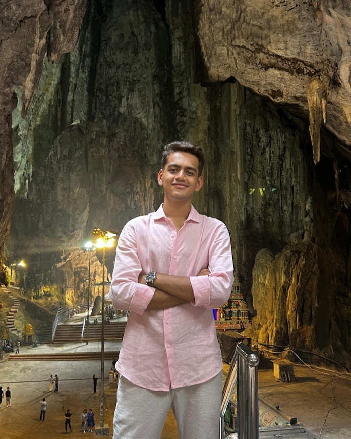

Computer Science Student • AI Builder • Systems Engineer • Sustainability Leader
Computer Science student at VIIT Pune interested in artificial intelligence, automation systems, cybersecurity and scalable software development. I enjoy building solutions that combine technology with real-world impact.

I focus on building intelligent systems and practical digital tools. My interests include artificial intelligence, machine learning, automation systems, and cybersecurity analytics. Alongside technology, I work on environmental initiatives through Forengers and support global programs through the Office of International Relations.
Python, Java, C++, JavaScript
HTML, CSS, JavaScript
Machine Learning, Data Analysis
Google Apps Script, Workflow Automation
Raspberry Pi, NFC Systems
Insider Risk Analytics
Developed a machine learning model to predict real estate prices using historical housing datasets.
The system analyzes multiple parameters such as location, size, and property features to generate accurate price predictions using regression algorithms.
Designed an automation platform using Google Apps Script and Google Sheets to streamline repetitive operational workflows.
The system automates data processing, report generation, and task management, reducing manual effort and improving efficiency.
Developed a web-based platform to manage student records, administrative operations, and institutional workflows.
The system helps organize academic data, streamline administrative tasks, and improve accessibility of institutional information.
Designed an IoT-based vaccine tracking system using NFC, Raspberry Pi, GPS, and environmental sensors.
The system monitors vaccine transportation conditions including temperature, location, and delivery checkpoints to ensure safety throughout the supply chain.
Built an enterprise software solution that collects business inquiries and automatically distributes them to relevant vendors.
The system generates structured quotations and ensures each vendor receives only the inquiries relevant to their services.
Developed a machine learning model designed to analyze transportation datasets and predict traffic congestion patterns.
The system can help optimize traffic planning and assist in identifying high congestion routes during peak hours.
Built a Generative AI based tool that evaluates resumes and provides feedback based on job role requirements.
The system analyzes resume structure, skills, and experience and suggests improvements to increase candidate suitability.
Designed and developed the official corporate website for AirOceans Transcontinental Limited.
The website improves the company’s digital presence, provides structured information about services, and enhances accessibility for potential clients.
Developed a cybersecurity analytics system focused on detecting insider threats within enterprise networks.
The platform analyzes behavioral patterns and system activity to identify suspicious actions and potential security risks.
Actively involved in planning and executing large-scale environmental initiatives including plantation drives, sapling monitoring systems, and sustainability programs across multiple zones of the city.
Worked on improving operational coordination between volunteers, NGOs, and corporate partners to ensure successful execution of environmental projects.
Leading the development of automation tools for environmental monitoring and project management using Google Apps Script and Google Sheets.
Designed systems to track sapling growth, manage data collection, and generate structured reports across multiple plantation zones, reducing manual data entry and improving efficiency.
Contributing to international engagement initiatives by supporting global collaboration programs, student exchange activities, and institutional partnerships.
Assisting in coordination of international academic programs and helping build stronger global connections for the institution.
Collaborated with NGOs, volunteers, and corporate partners to execute environmental initiatives across multiple areas of the city.
Focused on improving coordination, volunteer engagement, and project execution for sustainability-focused programs.
Recognized for outstanding execution and leadership in organizing large-scale environmental initiatives and operational projects.
Awarded for consistent contribution and successful execution of sustainability initiatives across multiple projects.
Research paper on the Smart IoT Vaccine Tracking System accepted for review and management through the Microsoft CMT conference system.
Recognized for developing the corporate website for AirOceans Transcontinental Limited and improving its digital presence.